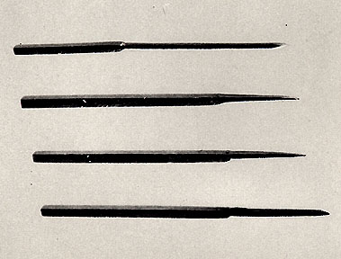
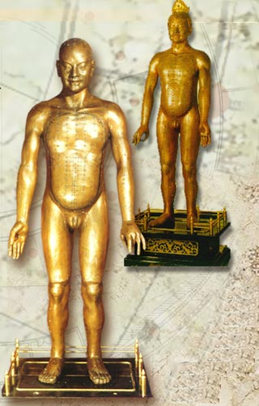

The History of Acupuncture
The following is a brief overview and is not meant to be exhaustive.
The Stone Age
- Bian shi - sharpened stones were used for acupuncture.
- These bian shi date back to 3000 BCE.
- Bloodletting may have been a precursor to acupuncture.
- Evidence shows the use of bone fragments, fish bones, and bamboo for needles as well.
- With the Bronze Age came bronze needles, but the stone needles were still the most widely used.
475 BCE–24 CE
- The feudal system in China was established and strengthened.
- With it, came iron weapons.
- Stone needles were then replaced with iron needles.
- Gold and silver needles were also used, but to a lesser extent.
Ancient Texts
- The writing for "acupuncture" was found on bone and tortoise shell inscriptions from 1800 BCE.
- Several historical texts from the 4th and 5th centuries BCE make mention of acupuncture.
- The Mawangdui medical manuscripts from the 3rd century BCE detail the acupuncture meridians, but make no mention of actual needling.
- Huangdi's Internal Classic – around 250 BCE.
- The first and most famous text detailing Chinese medical theory.
- Acupuncture points, types of needles, needling techniques, and treatments are all detailed.
- Systematic Classic of Acupuncture and Moxibustion – 260 CE.
- This text is comprised of 12 volumes detailing 349 acupuncture points.
- It is a complete clinical manual / textbook.
The Bronze Man
- Wang Weiyi (987-1067 CE) wrote The Illustrated Manual on Points for Acupuncture and Moxibustion which included the descriptions of 657 points.
- He also cast two bronze statues on which meridians and points were engraved for teaching purposes.
Ming Dynasty – 1368 - 1644 CE
- This time period is considered the climax of Chinese medical theory and acupuncture.
- Extensive collections and revisions of were made of existing literature.
Qing Dynasty – 1644 - 1911 CE
- For varioius reasons, including politics, herbal medicine was regarded as superior to acupuncture.
- In 1822, acupuncture was banned from the Imperial Medical College.
Chinese Nationalist Party
- After 1911, traditional medicine in China was discouraged and Western Biomedicine was introduced.
- Acupuncture remained popular among the common folk, and the "barefoot doctors" emerged.
The People's Republic of China
- In 1950, Chairman Mao Zedong adopted policies that revitalized acupuncture and traditional medicine in China.
- A review of important medical texts was done which led to TCM (Traditional Chinese Medicine).
- From 1970 to today China has paved the way with extensive scientific research on Acupuncture.
Acupuncture in Europe
- The first European acupuncture publication was published in 1658 in Holland by the Dutch doctor Jakob de Bondt.
- European acupuncture then developed independently from that in China.
- Electro-acupuncture and auricular-acupuncture were pioneered in Europe and then later adopted in China.
Acupuncture in the USA
- In 1826 in the USA, the first acupuncture publication was by Bache Franklin M.D., great grandson of Benjamin Franklin.
- After the 1920's, acupuncture was very rare outside of Chinatowns.
- In 1971, NY Times reporter James Reston had surgery with acupuncture anesthesia and also post-op pain relief by Acupuncture. This brought much publicity to acupuncture.
- The first Chinese Medical Schools appeared in the 1970s, and now there are over 40 such accredited colleges.
- In 1996, acupuncture needles were changed from the "investigative" category to accepted medical instruments by the FDA.
- In 1997, The National Institutes of Health issued the Consensus Statement that recognized that "Acupuncture as a therapeutic intervention is widely practiced in the United States" and "may be useful as an adjunct treatment or an acceptable alternative or be included in a comprehensive management program."
needles 113 BC
